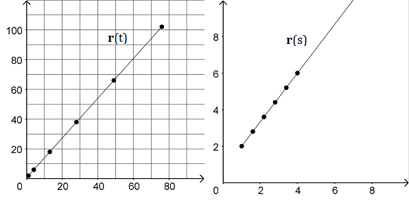

Arc Length
Back in Calc II, you learned about parametric equations and how we can compute the length of a curve defined by parametric equations. The following video gives a review of how the arc length formula is developed.
Since vector functions are defined as parametric equations, we can apply the same logic to finding the arc length of a vector-valued function.
The arc length of the smooth curve \(\vec{r}(t) = \langle f(t), g(t), h(t) \rangle\) for \(a \le t \le b\) can be computed using the following formula where \(f'\), \(g'\) and \(h'\) are continuous functions are \(\left[ a, b \right] \).
\[L = \int_{a}^{b} \lvert \vec{r}'(t) \rvert dt = \int_{a}^{b} \sqrt{{\left[ f'(t) \right]}^2 + {\left[ g'(t) \right]}^2 + {\left[ h'(t) \right]}^2} dt \]Arc Length as a Parameter
Usually, vector functions are parameterized by an arbitrary paremeter \(t\), often in an effort to simplify the expressions in the parameter functions. But it is possible, and sometimes even necessary, to parameterize a vector function by its arc length.
For a smooth curve \(\vec{r}(t)\) for \(t \ge a\), the arc length \(s\) as a function of t is defined by the following integral.
\[s = s(t) = \int_{a}^{t} \lvert \vec{r}'(u) \rvert du\]If we can solve this function for \(t\), then we can rewrite \(\vec{r}(t)\) as \(\vec{r}(s)\).
For example, the curve \(\vec{r}(t) = \langle 3t^2+1, 4t^2+2 \rangle \) can be parameterized using its arc length as \( \vec{r}(s) = \langle \frac{3}{5}s+1, \frac{4}{5}s+2 \rangle \). A couple graphs of the curve of \(\vec{r}\) are shown below. The left graph illustrates \(\vec{r}(t)\) with points at \(t = 0, 1, 2, 3, 4\) and \(5\) while the right graph illustrates \(\vec{r}(s)\) with points at \(s = 0, 1, 2, 3, 4\) and \(5\). Notice how the distances between the points of r(t) change as t increases, but the distances between points of r(s) remain the same.
The following video gives an example to show how we can change the parameterization of a vector function from any arbitrary \(t\) to the arc length \(s\).